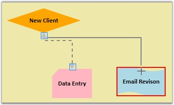

For moving nodes from one position to another, just click and drag the desired node. Connections can also be moved to other nodes and a new node will start acting as the head node or the tail node, depending where the connector was moved from.
To move the connector:
· Click on the connector to be moved.
· An adorner will be displayed on the head and the tail decorators, indicating the selection of the connector.
· Now click and drag the desired decorator shape and drop it on the node to which you want to connect.

Figure 166:Moving Connector
As seen in the figure, the connector will then be removed from the old node and added to the node that is currently hit.